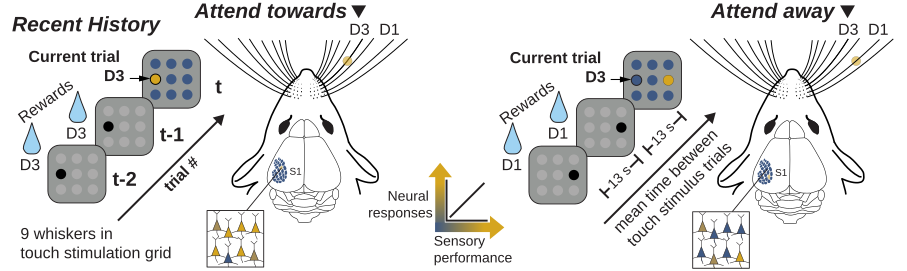
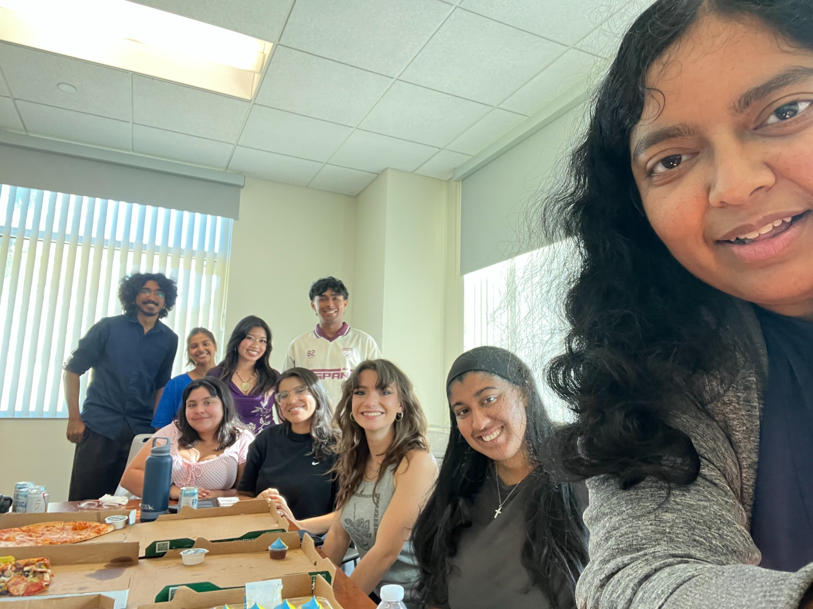

Mapping cellular and circuit
mechanisms of attention
in health and disease.
We are interested in the interplay between cognition and perception. We investigate how experience dynamically shapes neural representations across timescales to guide adaptive behavior.
Learn moreQuestions
How does experience calibrate developing attentional circuits?
How does circuit dysfunction alter attention?
We use integrative approaches to study the brain in action.
In mice, the arrangement of whiskers on the face corresponds to a clearly defined anatomical map in primary somatosensory cortex. This precise anatomical organization allows us to visualize the attentional “spotlight” at cellular resolution, revealing how attention selectively modulates neural responses to touch.
We combine quantitative behavioral methods, computational modeling, and modern genetic tools with two-photon calcium imaging, extracellular recordings, and optogenetics in behaving mice. These approaches allow us to record neuronal dynamics and manipulate specific cell types to examine how neural circuits mediate perception and attention.

Current Research
Our ongoing projects examine how distinct classes of local interneurons and neuromodulatory inputs contribute to attentional modulation in sensory cortex.
Our research is supported by the NIH BRAIN Initiative, the Brain & Behavior Research Foundation (BBRF), and a UC Riverside Regents’ Faculty Fellowship.
Team

Deepa L. Ramamurthy, PhD
Principal Investigator
Assistant Professor of Behavioral Neuroscience,
Department of Psychology
Graduate Students
- Brontë NealIncoming, Fall 2026
- Levi-Briana ShinnIncoming rotation, Fall 2026
Undergraduate Students
Sarai Bielmas, Emma Cohen, Mahi Ekmekci, Sreeya Gambhirrao, Yashica Pandey, Mira Sinha
Undergraduate Alumni
Debdeep Bandyopadhyay, Sakshi Bhargava, Natalie Cortez, Katelyn Lau, Asim Quraishi, Avik Shrestha
Publications
- 2026
Complex three-dimensional rearing environments amplify compensatory plasticity following early blindness.
eNeuro 13 (7), ENEURO.0059-26.2026
Research Spotlight
- 2025
Reward history guides focal attention in whisker somatosensory cortex.
Nature Communications 16, 5580
- 2023
VIP interneurons in sensory cortex encode sensory and action signals but not direct reward signals.
Current Biology 33 (16), 3398–3408.e7
- 2022
In vivo imaging of retinal and choroidal morphology and vascular plexuses of vertebrates using swept-source optical coherence tomography.
Translational Vision Science & Technology 11 (8), 11
- 2021
Developmental plasticity of texture discrimination following early vision loss in the marsupial Monodelphis domestica.
Journal of Experimental Biology 224 (9), jeb236646
- 2020
Age-related changes in sound onset and offset intensity coding in auditory cortical fields A1 and CL of rhesus macaques.
Journal of Neurophysiology 123 (3), 1015–1025
- 2018
Neural coding of whisker-mediated touch in primary somatosensory cortex is altered following early blindness.
Journal of Neuroscience 38 (27), 6172–6189
- 2017
Spectral and spatial tuning of onset and offset response functions in auditory cortical fields A1 and CL of rhesus macaques.
Journal of Neurophysiology 117 (3), 966–986
- 2016
The evolution of whisker-mediated somatosensation in mammals: sensory processing in barrelless S1 cortex of a marsupial, Monodelphis domestica.
Journal of Comparative Neurology 524 (17), 3587–3613
- 2014
Visuospatial selective attention in chickens.
Proceedings of the National Academy of Sciences 111 (19), E2056–E2065
- 2013
Spatial probability dynamically modulates visual target detection in chickens.
PLOS ONE 8 (5), e64136
News
The Ramamurthy Lab opens at the University of California, Riverside.
Contact
Graduate Students & Postdocs
We are always interested in hearing from prospective graduate students and postdoctoral applicants.
Prospective graduate students can apply through UCR’s Neuroscience PhD program or Psychology PhD program.
Undergraduate Students
For undergraduate RA opportunities, please complete the application form below instead of emailing.
Current openings: NONE — full through Spring 2026
Undergraduate RA applicationFor other research inquiries, contact Dr. Ramamurthy.
EmailRamamurthy LabDepartment of Psychology
University of California, Riverside
900 University Avenue
Riverside, CA 92521
Office: Psychology Building, Room 2131
Lab: Life Sciences, LSP 438
← Back to Contact
Undergraduate RA application
If no positions are currently available, your application will be added to our waitlist. Dr. Ramamurthy will contact you if an opening is a good fit for your interests and experience.
Tell us about your studies and experience. All fields are required; enter “None” for coursework, coding experience, or previous research experience that does not apply.